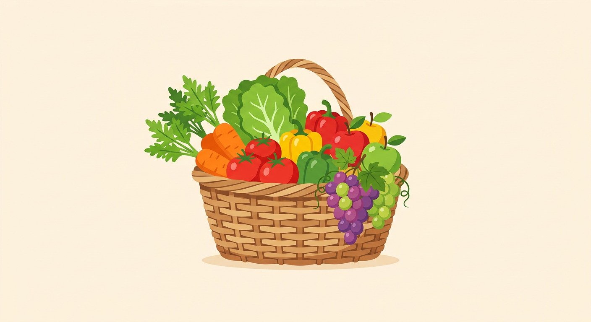

Word
produce
/prəˈduːs/ (verb) · /ˈprɑːduːs/ (noun) UK /prəˈdjuːs/ (verb) · /ˈprɒdjuːs/ (noun)

fresh produce — منتجات زراعية طازجة
“The factory produces over 500 cars every day.”
Word · الوجه الخلفي
produce
/prəˈduːs/ (verb) · /ˈprɑːduːs/ (noun) UK /prəˈdjuːs/ (verb) · /ˈprɒdjuːs/ (noun)
المعاني بالعربية
فعل (يُنتِج): يُنْتِج، يُصَنِّع، يُخْرِج، يُبْرِز، يُثْمِر، يُغِلّ، يُحْدِث، يُسَبِّب، يُولِّد، يُقَدِّم (دليلاً)، يَعْرِض، يَلِد (للحيوان)، يُنْتِج (عملاً فنياً)
اسم (مُنتَج زراعي): مُنْتَجَات زِرَاعِيَّة، مَحَاصِيل، غَلَّة
Definitions (EN)
verb
- to make or manufacture something, especially in large quantities
- to create or cause a result, feeling, or effect
- to grow crops, fruit, or yield
- to bring something out from somewhere and show it
- to provide something that is needed, such as evidence or proof
- to give birth to young (of animals)
- to finance and manage the making of a film, play, or musical recording
noun
- things that have been grown or made, especially fresh fruit and vegetables
Synonyms — المرادفات
manufacturemakecreategenerateyieldbring aboutgive rise tofabricatebear
Examples — أمثلة سياقية
- The factory produces over 500 cars every day.يُنتج المصنع أكثر من 500 سيارة يومياً.Reverso Context (محاكاة في العينة)
- The region produces some of the finest olive oil in the world.تُنتج المنطقة بعضاً من أجود زيت الزيتون في العالم.Reverso Context (محاكاة في العينة)
- Stress can produce serious health problems.يمكن أن يتسبب التوتر في مشاكل صحية خطيرة.Reverso Context (محاكاة في العينة)
- He produced a letter from his pocket and handed it to me.أخرج خطاباً من جيبه وناولني إياه.Reverso Context (محاكاة في العينة)
- Fresh local produce is sold at the market every Saturday.تُباع المنتجات الزراعية المحلية الطازجة في السوق كل سبت. (اسم)Reverso Context (محاكاة في العينة)
fresh produce — منتجات زراعية طازجة
Word Family — الاشتقاقات والتفرعات
| Form | Type | Definition (EN) | المعنى (عربي) |
|---|---|---|---|
| produce | verb / noun (base) | to make or grow something; agricultural products | أنتجَ / منتجات زراعية |
| produces | verb (3rd person singular present) | he/she/it produces | يُنتج (المضارع مع الغائب المفرد) |
| produced | verb (past & past participle) | made or manufactured in the past | أنتَجَ / مُنْتَج (ماضي واسم مفعول) |
| producing | verb (present participle) | in the process of making something | جارٍ إنتاجه / أثناء الإنتاج |
| product | noun | something that is made to be sold | مُنْتَج |
| products | noun (plural) | more than one product | مُنْتَجَات |
| producer | noun | a person or company that produces goods or films | مُنْتِج (شخص أو شركة) |
| producers | noun (plural) | more than one producer | مُنْتِجُون |
| production | noun | the process of making things; the amount produced | إِنْتَاج / عَمَلِيَّة الإِنْتَاج |
| productive | adjective | achieving a lot; yielding good results | مُنْتِج، مُثْمِر |
| productivity | noun | the rate at which work is completed or goods are produced | إِنْتَاجِيَّة |
| reproduction | noun | the biological process of producing new life; the act of copying | تَكَاثُر / اِسْتِنْساخ، إِعَادَة إِنتَاج |
ملاحظة نطق: الفعل على المقطع الثاني (proDUCE)، أما الاسم فعلى المقطع الأول (PROduce).
ID W0001 · PDF p. —
Word
umbrella
/ʌmˈbrelə/ UK /ʌmˈbrelə/
an umbrella — مِظَلَّة
“She opened her umbrella when it started to rain.”
Word · الوجه الخلفي
umbrella
/ʌmˈbrelə/ UK /ʌmˈbrelə/
المعاني بالعربية
اسم: مِظَلَّة (للمطر)، شَمْسِيَّة (للشمس)، (مجازاً) مِظَلَّة / إِطَار جَامِع
Definitions (EN)
noun
- a light device made of cloth on folding ribs around a stick, used for protection against rain
- a parasol: a similar device used for protection against the sun
- (figurative) an organization or structure that covers or includes many different groups
Synonyms — المرادفات
parasolsunshadecanopybrolly (BrE informal)gamp (old-fashioned)
Examples — أمثلة سياقية
- She opened her umbrella when it started to rain.فتحت مظلّتها عندما بدأ المطر.Reverso Context (محاكاة في العينة)
- We sat under a big beach umbrella to escape the sun.جلسنا تحت شمسيّة شاطئ كبيرة اتّقاءً للشمس.Reverso Context (محاكاة في العينة)
- The charity works under the umbrella of a larger international organization.تعمل الجمعيّة الخيريّة تحت مِظلّة منظّمة دوليّة أكبر. (مجازي)Reverso Context (محاكاة في العينة)
an umbrella — مِظَلَّة
Word Family — الاشتقاقات والتفرعات
| Form | Type | Definition (EN) | المعنى (عربي) |
|---|---|---|---|
| umbrella | noun (base) | a device for protection against rain or sun | مِظَلَّة |
| umbrellas | noun (plural) | more than one umbrella | مِظَلَّات |
كلمة جامدة قليلة المشتقات؛ تُذكر صيغة الجمع فقط، وهذا جزء من مواصفات المعالجة: توضيح انعدام المشتقات بدل تجاهلها.
ID W0002 · PDF p. —
Phrasal Verb
give up
/ˌɡɪv ˈʌp/ UK /ˌɡɪv ˈʌp/
“He gave up smoking after twenty years.”
Phrasal Verb · الوجه الخلفي
give up
/ˌɡɪv ˈʌp/ UK /ˌɡɪv ˈʌp/
المعاني بالعربية
فعل مركّب: يَسْتَسْلِم، يُقْلِع عن (عادة)، يَتَخَلَّى عن، يَتَوَقَّف عن، يُسَلِّم نفسه (give oneself up)، يُضَحِّي بِـ
Definitions (EN)
phrasal verb
- to stop trying to do something because you cannot succeed
- to quit a habit, such as smoking
- to stop doing something that you used to do
- to surrender: to give yourself up to the police
- to sacrifice or let somebody else have something that is yours
Synonyms — المرادفات
quitabandonsurrenderrelinquishrenouncekick (a habit)
Examples — أمثلة سياقية
- He gave up smoking after twenty years.أقلع عن التدخين بعد عشرين عاماً.Reverso Context (محاكاة في العينة)
- Don't give up — you're almost there!لا تستسلم! لقد اقتربت من الهدف.Reverso Context (محاكاة في العينة)
- She gave up her job to look after her children.تخلّت عن عملها لرعاية أطفالها.Reverso Context (محاكاة في العينة)
- The fugitive gave himself up to the police.سلّم الهارب نفسه للشرطة.Reverso Context (محاكاة في العينة)
Word Family — الاشتقاقات والتفرعات
| Form | Type | Definition (EN) | المعنى (عربي) |
|---|---|---|---|
| give | verb (base) | to hand something to somebody | يُعطي |
| gives | verb (3rd person singular present) | he/she/it gives | يُعطي (الغائب المفرد) |
| gave | verb (past) | past of give | أعطى (ماضي) |
| given | verb (past participle) | used in perfect tenses | مُعطى / اسم مفعول |
| giving | verb (present participle) | in the process of giving | جارٍ العطاء |
| give-up | noun (informal) | an act of quitting (rare) | اِسْتِسْلام (نادر الاستعمال) |
الأفعال المركّبة ترث تصريف الفعل الأصلي (give)، ويُشار إلى ذلك في البطاقة بدل تكرار كل التصريفات.
ID P0001 · PDF p. —